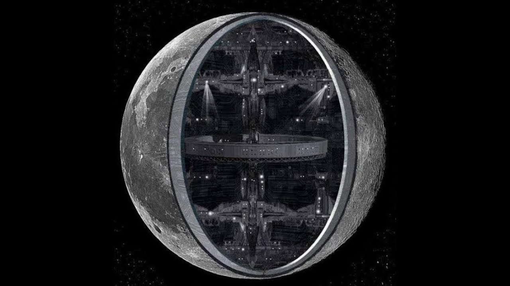

Специальные люди намеренно придумывают
слишком глупые теории заговора, чтобы отвлечь внимание людей от истины, которая
находится у них перед глазами.
Создатели антивирусов
спонсируют создание компьютерных вирусов, чтобы у
них была работа и, соответственно, заработок.
Производители женской одежды
специально не делают на ней карманы либо делают их
слишком маленькими, чтобы женщины покупали дорогие сумочки.
Луны - не существует. Луна - это голограмма
Луны не существует. А есть проекция объекта, который мы привычно
называем Луной. И эта
проекция создает для нас иллюзию присутствия на небе реальной планеты –
спутника Земли. Мало
того, эта проекция совсем не так уж искусно
выполнена. Она плоская и всегда развернута к нам одной стороною.
Стоит даже предположить, что
это сделано ради экономии средств, поскольку тому уровню развития
человечества, на котором мы
пребываем, достаточно такой информации для
поддержания внешней видимости присутствия Луны. Этот плоский объект,
который мы привыкли
считать Луной, на самом деле действительно присутствует на орбите
Земли. Но это лишь
голограмма – маскировка, прикрывающая что-то другое. И
это и есть объяснение, почему никто сегодня не стремится в Космос на Луну.
Наверняка в
правительствах высокоразвитых стран эта информация уже не является тайной,
но она пока
скрывается от основной массы населения. Что же там
находится на самом деле под видом Луны? Об этом мы пока вряд ли узнаем.
Впрочем, рассмотрев и
открыв тот факт, что это голограмма, мы можем надеяться на следующий шаг,
где нам приоткрывать
начнут тайну устройства мира. Вся эта
информация наверняка дается нам специально для самопознания.
Видимо, настало время. Почему в
дальний космос человечество стремится отправить свои исследовательские аппараты,
а Луну при
этом не желает изучать, хотя она относительно
близко. Почему все фотографии Луны, часто доступные людям для просмотра,
такого ужасно плохого
качества. Почему тот же телескоп Хаббл и другие подобные объекты на Земле
не способны сделать
хорошие снимки лунной поверхности. Ведь
даже фотографии Марса по качеству лучше. Почему спутники, наблюдающие за
поверхностью Земли,
могут делать снимки из космоса такого разрешения, что даже номер на идущем
автомобиле можно
рассмотреть, а вот спутники лунные не дают
никакой полезной качественной информации…

Скрытая планета Нибиру уничтожит мир
В прошлом веке уроженец Баку по имени Захария Ситчин занялся изучением
шумерской клинописи и
обнаружил, что представители древнего народа верили в существование
загадочной планеты,
которую населяют инопланетные существа —
ануннаки. Они называли ее Нибиру. Как Ситчину удалось выяснить,
шумеры считали, что эта
планета проходит через Солнечную систему раз в 3600 лет, но ее практически
невозможно
разглядеть, потому что она отражает свет, то есть
фактически «невидима». Однако Нибиру вовсе не безобидна — все дело
в ее разрушительном
гравитационном поле. Захария Ситчин считал, что в далеком прошлом
Земля называлась Тиамат и
была в два раза больше по размеру, чем сейчас. Но
когда в систему планет вторглась Нибиру, она прошла мимо Тиамат и
разорвала ее на две части.
Одна половина Тиамат стала нашей Землей, а другая раскололась и
положила начало поясу
астероидов. Таким образом, следующий «визит» Нибиру
в нашу Солнечную систему может быть куда более разрушительным. Сторонники
теории заговора
верят в то, что когда Планета X опять приблизится к Земле, то наша родная
планета просто
превратится в звездную пыль, а человеческая
цивилизация будет уничтожена за доли секунды. Кстати, конспирологи даже
называют определенный
год, когда Нибиру принесет конец света — 2025. Так что нам осталось совсем
недолго подождать,
чтобы проверить эту теорию.
Земля налетит на земную ось
Северный и Южный полюса Земли не всегда были там, где находятся сейчас.
Сторонники теории
полагают, что однажды земная ось сдвинулась. Другие говорят, что Земля всегда
вращается на
полярной оси, но земная кора движется таким
образом, что ландшафт под каждым из полюсов меняется. Изменения климата,
землетрясения и
извержения вулканов являются прямым следствием сдвига полюсов. Некоторые
утверждают, что в
скором времени Землю ждет очередной трагический
сдвиг полюсов, в результате которого целые континенты окажутся под водой,
а другие
поднимутся из морской пучины.
Великаны существуют
Почти в каждой культуре есть мифологические отсылки к гигантам - от сверхлюдей
в индуизме до
нефилимов в Библии. И, возможно, эти представления имеют под собой основание:
многие археологи
со всего мира находили человеческие
останки, по размерам многократно более крупные, чем останки современных людей.
Тем не менее,
многие из таких находок оказались фальшивками, и из-за подделок действительно
сложно
разобраться, где правда, а где ложь. Несмотря на
это, все равно интересно разобраться: почему мифы разных народов мира упорно
говорят о
гигантах?